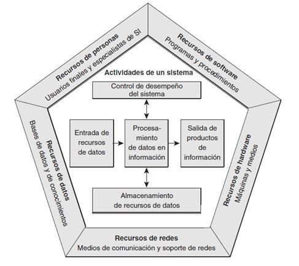

Componentes de los Sistemas de Información
- Hardware : Consiste en el equipamiento informático para llevar a cabo la entrada, proceso y salida de la información (lugar físico donde el subsistema lógico realiza el tratamiento de datos). Los dispositivos de entrada incluyen teclados, lectores de cinta magnética, etc. Los dispositivos de proceso incluyen la unidad central de proceso, memoria y almacenamiento.
- Software : Consiste en el equipamiento informático para llevar a cabo la entrada, proceso y salida de la información (lugar físico donde el subsistema lógico realiza el tratamiento de datos). Los dispositivos de entrada incluyen teclados, lectores de cinta magnética, etc. Los dispositivos de proceso incluyen la unidad central de proceso, memoria y almacenamiento.
- Redes y telecomunicaciones :Una red de computadores (también llamada red de ordenadores o red informática) es un conjunto de equipos (computadoras y/o dispositivos) conectados por medio de cables, señales, ondas o cualquier otro método de transporte de datos, que comparten información (archivos), recursos (CD-ROM, impresoras, etc.) y servicios (acceso a Internet, e-mail, Chat y juegos entre otros).
- Talento humano : Se incluye en este subsistema al personal técnico y especializado (jefes de proyecto, Gerentes de TI, operadores informáticos, arquitectos, analistas de sistemas, programadores y administradores de bases de datos entre otros) y a los usuarios del SI, tanto internos como externos.
- Datos, políticas y procedimientos : Los datos son Conjunto de cifras o valores que representan hechos del mundo real mediante los cuales el sistema obtiene la información de salida después de su procesamiento. Las políticas y procedimientos están conformados por las rutinas organizativas para el diseño y el desarrollo de nuevos proyectos, criterios de calidad, procedimientos relativos a cómo utilizar los sistemas, procedimientos de mantenimiento, programas de formalización de personal, etc. Es decir las estrategias, políticas, métodos y reglas en torno a los SI.
